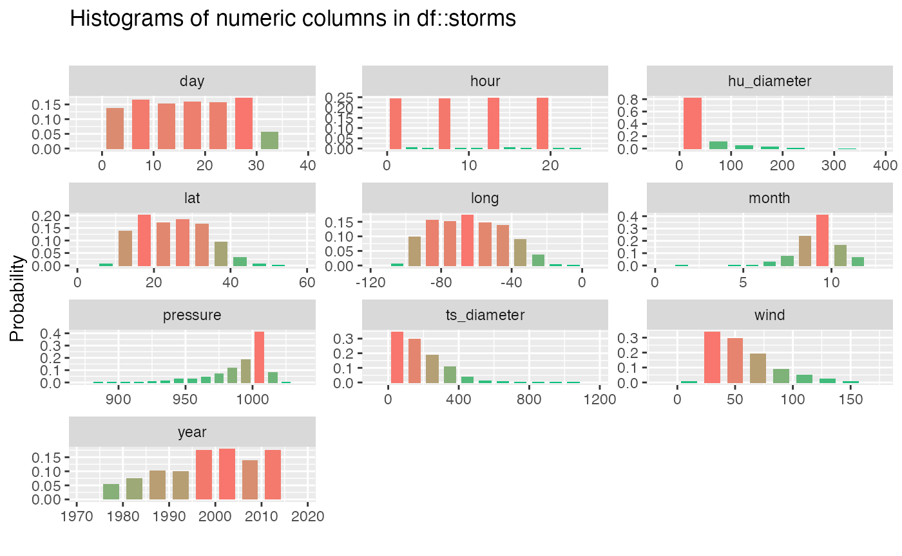
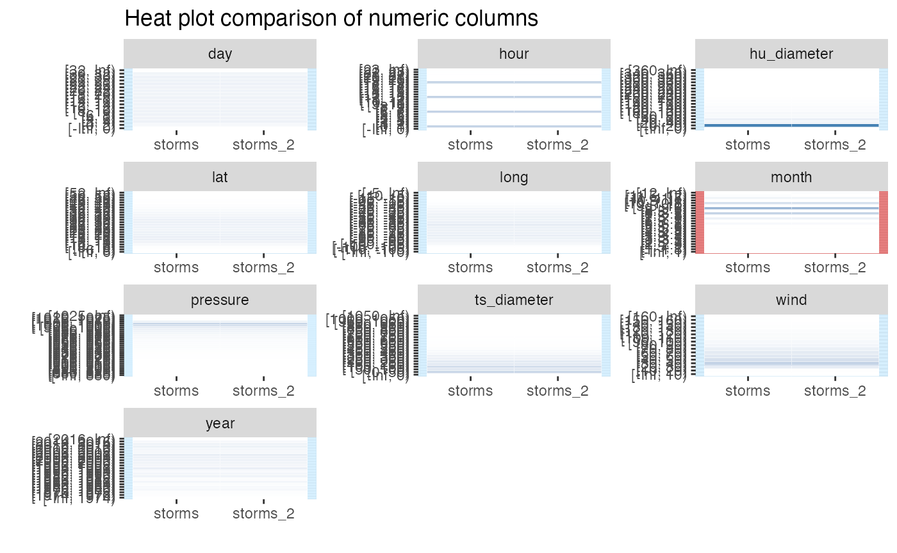

inspect_num_examples.Rmdstarwars
The examples below make use of the starwars and storms data from the dplyr package
For illustrating comparisons of dataframes, use the starwars data and produce two new dataframes star_1 and star_2 that randomly sample the rows of the original and drop a couple of columns.
inspect_num() for a single dataframeinspect_num() combining some of the functionality of summary() and hist() by returning summaries of numeric columns. inspect_num() returns standard numerical summaries (min, q1, mean, median,q3, max, sd), but also the percentage of missing entries (pcnt_na) and a simple histogram (hist).
## # A tibble: 10 x 10
## col_name min q1 median mean q3 max sd pcnt_na hist
## <chr> <dbl> <dbl> <dbl> <dbl> <dbl> <dbl> <dbl> <dbl> <nam>
## 1 year 1975 1990 1999 1998. 2006 2015 10.3 0 <tib…
## 2 month 1 8 9 8.78 9 12 1.24 0 <tib…
## 3 day 1 8 16 15.9 24 31 9.01 0 <tib…
## 4 hour 0 6 12 9.11 18 23 6.73 0 <tib…
## 5 lat 7.2 17.5 24.4 24.8 31.3 51.9 8.54 0 <tib…
## 6 long -109. -80.7 -64.5 -64.2 -48.6 -6 19.6 0 <tib…
## 7 wind 10 30 45 53.5 65 160 26.2 0 <tib…
## 8 pressure 882 985 999 992. 1006 1022 19.5 0 <tib…
## 9 ts_diam… 0 69.0 138. 167. 242. 1001. 141. 65.2 <tib…
## 10 hu_diam… 0 0 0 21.4 28.8 345. 41.3 65.2 <tib…The hist column is a list whose elements are tibbles each containing the relative frequencies of bins for each feature. These tibbles are used to generate the histograms when show_plot = TRUE. For example, the histogram for starwars$birth_year is
## # A tibble: 31 x 2
## value prop
## <chr> <dbl>
## 1 [-Inf, 880) 0
## 2 [880, 885) 0.0000999
## 3 [885, 890) 0.000200
## 4 [890, 895) 0.000400
## 5 [895, 900) 0.000300
## 6 [900, 905) 0.000300
## 7 [905, 910) 0.000699
## 8 [910, 915) 0.000999
## 9 [915, 920) 0.00130
## 10 [920, 925) 0.00390
## # … with 21 more rowsA histogram is generated for each numeric feature by passing the result to the show_plot() function:

inspect_num() for two dataframesWhen comparing a pair of dataframes using inspect_num(), the histograms of common numeric features are calculated, using identical bins. The list columns hist_1 and hist_2 contain the histograms of the features in the first and second dataframes. A formal statistical comparison of each pair of histograms is calculated using Fisher’s exact test, the resulting p value is reported in the column fisher_p.
When show_plot = TRUE, heat plot comparisons are returned for each numeric column in each dataframe. Where a column is present in only one of the dataframes, grey cells are shown in the comparison. The significance of Fisher’s test is illustrated by coloured vertical bands around each plot: if the colour is grey, no p value could be calculated, if blue, the histograms are not found to be significantly different otherwise the bands are red.
## # A tibble: 10 x 5
## col_name hist_1 hist_2 jsd fisher_p
## <chr> <list> <list> <dbl> <dbl>
## 1 year <tibble [23 × 2]> <tibble [23 × 2]> 0.0000221 NA
## 2 month <tibble [24 × 2]> <tibble [24 × 2]> 0.0125 NA
## 3 day <tibble [18 × 2]> <tibble [18 × 2]> 0.00000119 NA
## 4 hour <tibble [25 × 2]> <tibble [25 × 2]> 0.000539 NA
## 5 lat <tibble [25 × 2]> <tibble [25 × 2]> 0.000000460 NA
## 6 long <tibble [23 × 2]> <tibble [23 × 2]> 0.00000174 NA
## 7 wind <tibble [17 × 2]> <tibble [17 × 2]> 0.000104 NA
## 8 pressure <tibble [31 × 2]> <tibble [31 × 2]> 0.00000102 NA
## 9 ts_diameter <tibble [23 × 2]> <tibble [23 × 2]> 0 1.000
## 10 hu_diameter <tibble [20 × 2]> <tibble [20 × 2]> 0 1.000